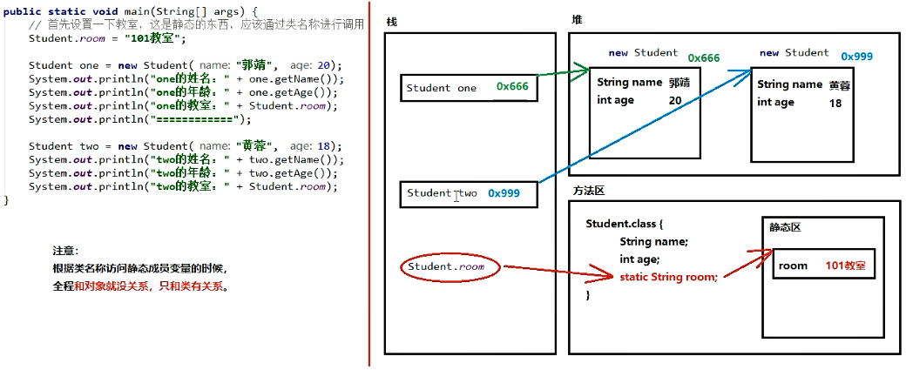

2019-10-22-22:28:39
目录
1.Static静态类
2.Static内存图
3.Static静态代码块
4.Arrays类
5.Math类
Static静态类
一旦使用static修饰成员方法,那么它就成为了静态方法,静态方法不属于对象,而是属于类的
注意:
1.如果没有static关键字修饰,那么必须首先创建对象,然后通过对象使用它
2.如果有了static关键字修饰,那么不需要创建对象,直接就能通过类名称来使用它
使用格式:
静态变量:类名称.静态变量
静态方法:类名称.静态方法
注意事项:
1.静态不能直接访问非静态(先有静态内容,后有非静态内容)
2.静态方法当中不能用this(this代表当前对象,通过谁调用的方法,谁就是当前对象)
package demopra;
public class StaticText {
public static void main(String[] args) {
//首先创建对象
MyClass mc = new MyClass();
//然后才能使用没有静态static关键字的内容
mc.method();
//对于静态方法来说,可以通过对象名调用,也可以通过类名称调用
mc.methodStatic();//正确,不推荐使用这种方法
MyClass.methodStatic();//正确,推荐
//对于本来当中的方法可以省略类名称
myMethod();
StaticText.myMethod();//等效于myMethod();
}
public static void myMethod(){
System.out.println("自己的方法");
}
}
package demopra;
public class MyClass {
private int num;//成员变量
private static int numStatic;//静态变量
//成员方法
public void method(){
System.out.println("成员方法执行啦!!!");
//成员方法可以访问成员变量
System.out.println(num);
//成员方法可以访问静态变量
System.out.println(numStatic);
}
//静态方法
public static void methodStatic(){
System.out.println("静态方法执行啦!!!");
//静态方法可以访问静态变量
System.out.println(numStatic);
//静态方法不可以访问非静态变量[重点]
// System.out.println(num);//Non-static field 'num' cannot be referenced from a static context
//静态方法中不能使用this关键字
// System.out.println(this);//'demopra.MyClass.this" cannot be referenced from a static context
}
}Static内存图

Static静态代码块
格式:
public class 类名称{
static{
静态代码块内容
}
}
特点:
1.当第一次用到本类时,静态代码块执行唯一的一次
2.静态内容总是优先于非静态,所以静态代码块比构造方法先执行
典型用途:
用来一次性对静态变量进行赋值
Arrays类
java.util.Arrays是一个与数组相关的工具类，里面提供了大量静态方法，用来实现数组常见的操作。
public static string tostring(数组): 将参数数组变成字符串(按照默认格式，[元索1, 元素2,元索...])
public stotic void sort(数组): 按照默认升序(从小到大)对数组的元素进行排序。
备注:
1.如果是数值，sort默认按照升序从小到大
2.如果是字符串，sort默认按照字母升序
3.如果是自定义的类型，那么这个自定义的类需要有Comparable或者Comporator接口的支持。
package demopra;
import java.util.Arrays;
public class ArraysTest {
public static void main(String[] args) {
//定义一个int数组
int[] arr = {10,20,30};
//将int数组按照默认格式变成字符串
String arr1 = Arrays.toString(arr);
System.out.println(arr1);//[10, 20, 30]
int[] arr2 = {50,10,40};
//按照默认大小进行升序
Arrays.sort(arr2);
System.out.println(Arrays.toString(arr2));//[10, 40, 50]
String[] arr3 = {"c","b","a"};
Arrays.sort(arr3);
System.out.println(Arrays.toString(arr3));//[a, b, c]
}
}Math类
java.util.Math类是数学相关的工具类，里面提供了大量的静态方法，完成与数学运算相关的操作。
public. static double abs(double num); 获取绝对值。有多种重载。
public static double ceil(double num);向上取整。
public static double floor(double num);向下取整。
public static long round(double num): 四舍五入。
Math. PI代表近似的圆周李常量(double) 。
ckage demopra;
public class MathTest {
public static void main(String[] args) {
//获取绝对值
System.out.println(Math.abs(-23));//23
//向上取整
System.out.println(Math.ceil(3.1));//4.0
//向下取整
System.out.println(Math.floor(3.9));//3.0
//四舍五入
System.out.println(Math.round(3.15));//3
}
}package demopra;
/*
要求:计算对-8.8~11.1数值取绝对值(int)后,大于5或者小于1.1的值的个数
*/
public class MathTest {
public static void main(String[] args) {
//符合要求的数量
int count = 0;
double max = 11.1;//定义初始值max
double min = -8.8;//定义初始值min
for (int i = (int)min; i < max; i++) {
int abs = Math.abs(i);//取绝对值
if (abs>5 || abs < 1.1){//取值要求
System.out.print(i+" ");//-8 -7 -6 -1 0 1 6 7 8 9 10 11
count++;
}
}
System.out.println("总共有:"+count);//总共有:12
}
}